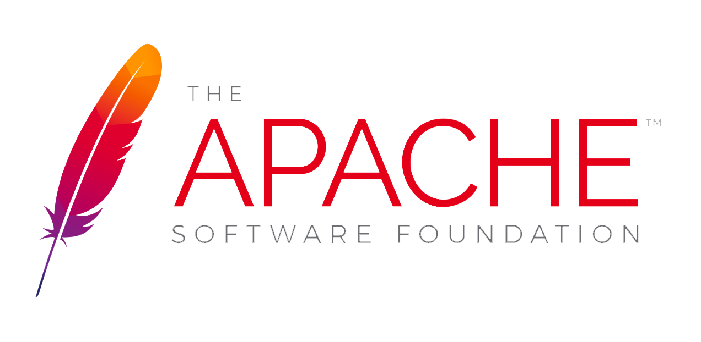

Again guidelines not rules. You can do things in a different way.
How To Slide Your Release Past The Incubator
Your Name
Your Job title
Your email

Who am I?
TODO Fill in your own your info here
I am not a Lawyer
I’m not a lawyer, and nothing on these sides is legal advice
Occasionally I get things wrong
My understanding has changed over time
Sometimes it’s complex, and there’s more than one “right” answer
I’m a volunteer and not paid to do this. Not even by my day job
This talk contains my views and may not represent the incubator as a whole
What is the Apache Incubator?
Main entry point for new projects
Where communities come to learn the Apache Way
Links existing projects with a community around them
Why we Have an Incubating Process?
Ensure donations comply with the Apache 2.0 license
Podling follows the ASF structure of contributors, committers and PMC members
Podling grants more responsibility via meritocracy
Ensure that decision making is done in the open
People act as individuals, not the company they work for
Podling learns to follow the Apache Way
The Apache Way
Charity - For the public good. Software costs nothing
Pragmatic - Business friendly
Community - Collaboration, consensus and diversity
Merit - The more you do you more responsibility you have. Not just code contributions
Open - Everything in the public view. Discussions occur on mailing lists. Everyone can participate
Consensus - Work together to find ways forward
Apache License
Permissive license - you can do what you want
Business friendly - can be used for commercial projects
Requires source headers, a LICENSE and (optionally) a NOTICE file
If your are not an ASF project:
You don’t need to publish the source
You don’t have to give back to the project
You don’t need to ask for permission to use
State of Play
48 projects in the incubator
306 IPMC members (but not all are active)
Projects usually stay around 2 years in the incubator
A dozen or so successful releases a month
About 80% of releases pass the incubator
Source Releases
Must be cryptographically signed
Must have an incubating disclaimer (there’s two now)
Have LICENSE and NOTICE file that follow Apache policy
Follow licensing terms of any 3rd party bundled software
3rd party files are compatible with the Apache license
Source files have ASF headers
Contain source code and no compiled code
Work in Progress Disclaimer
Less strict and your release may not comply with ASF policy
Must still be legal
You can list known issues
Issues noted must be fixed before graduation
Incubator Vote Process
Podling creates a release candidate
Vote on dev mailing list until 3 +1 votes and more +1 than -1
If vote fails need to make a new release candidate
Vote on incubator general mailing list
Need 3 +1 and more +1 than -1 by IPMC members
If vote fails need to make a new release candidate
Can release once vote passes and 72 hours pass
Why Your Release May Get a -1
Unexpected binary in the source release
Includes Category X licensed software (usually GPL)
Included Category B license software
LICENSE or NOTICE issue
Copyright issue
Missing license header or header issue
Contains encryption software
Representative Voting
About 80% of releases pass
Slight improvement on past years
Work in progress disclaimer will change this
-1 is Not a Veto
Release votes need 3 +1 votes and more +1 than -1 votes to pass
Only IPMC votes are binding but good to take notice of other votes
People can change their minds and vote again
People can put up conditional votes
A -1 vote needs a good reason
It Doesn’t Have to be Perfect
Incubating projects are not expected to get it right the first time
May not be familiar with policy at the start
Policy an guidelines doesn’t cover all situations
Different projects may do things in different ways
A release containing no surprises is a good thing
Make it Easy to Review
Don’t make people have to think hard about it
Provide well-named artefacts
Don’t try to be clever with licensing or headers or rat exclusions
Include compile instructions in the release
Make it easy to compile
There’s Not One Right Answer
Documentation can sometimes be confusing and sometimes out of date
Some cultural knowledge isn’t well documented
Large IPMC and some differing opinions on what is “correct”
Often multiple ways to solve the same issue
If in doubt err on the side of caution, often changes needed are minimal
[.notes]
Top Level Projects As Examples
Policy changes over time / may be out of date
A project may have its own reasons for doing something in a certain way
Take care when looking at TLPs for examples
Probably better to look at TLPs that have recently graduated
Cryptographic Signing
Release must be cryptographically signed
Keys need to be RSA with at least 4096 bits
Good idea to use an apache.org email address
Use sha256 or sha512 for hash
Disclaimer
Two different disclaimers
Put in a file called DISCLAIMER or DISCLAIMER_WIP
Could also be in README
Tagging
Good idea to tag releases
That way that can be easily compared to what is released
Can also be easily checked out and built if needed in the future
Note that git tags can be changed so provide hash in vote email
Licensing
This is where a lot of the issues occur
Observed some reluctance to understand
Language barrier to even those who speak English
Can be complex
ASF Policy does change over time
Legal vs Policy
Licenses provide certain legal obligations you need to comply with
Apache policy adds a little more:
Need to have NOTICE file
List all licenses in LICENSE (even if it’s not required)
Respect 3rd party licenses and headers
Developers vs Licensing
We’re not the only people who have difficulty or frustration with licensing
Apache projects tend to be on average a lot better!
External projects often:
Have unclear licenses
Include code under a different, sometimes incompatible, licenses
If Apache 2.0 licensed are missing a NOTICE file
Try to use funny licenses
33 Copies of BSD
WTF Intel Lawyers
Only Dead People
GPL or BSD?
Documentation Issues vs Errors
It’s better to have a documentation issue than a licensing error
Minor issues are OK to be fixed in the next release
If you’re unsure a license should be listed list it
Universal Donor
Give anyone confidence they can use our software without any legal issues
All software within an artefact is compatible with the Apache 2.0 licence
Means it can be used for commercial and non-commercial purposes
Guiding Principle
The LICENSE and NOTICE files accurately represent the contents of the distribution they belong to
Don’t mention stuff that’s not include in the release
There’s need to mention external dependencies in LICENSE and NOTICE
Applies to both source and binary artefacts
May Contain Nuts
When bundling software check to see what it contains
In particular look for Category B and Category X software
Look at photos or other resources like fonts that you may not have permissions to distribute or may be under another license
Check links in code
Manual inspection is not always required but often a good idea
Rat
Great tool for finding binaries and licenses in your source release
Not perfect but very handy
Will not find double headers
Will not check for multiple licenses in the same file
Only knows about a few licenses
Often exclusions can be too wide and miss something
Rat Output
Finding Licenses
One way is to use find and grep
find . -type f -exec grep -i "$1" {} \;Search for common license names “GPL”, “BSD”, “MIT”
Search for “copyright” and pipe to sort -u
Compare between releases
Pesky JS files
JS files, especially minified ones, are often missing license headers or license details
Some license require full text to be contained somewhere
Lots are under non-Apache licenses including GPL
Other included other bundled software e.g. jQuery and Bootstrap
Licenses change between versions
Take care!
Other People’s Cat Photos
Copy all the images!
find . -name "*.jpg" -exec cp {} images \;View all images using your OS or favourite image browsing tool
If you find something that may be suspect:
Look at image metadata
Find it with a Google reverse image search
Troublesome Fonts
Licensing around fonts can be complex
Look at font meta-data
Make sure you have permission to distribute
As fonts are binary may not be evident to users how they are licensed. You may want to make that clear in the LICENSE file
License File
License file named LICENSE or LICENSE.txt in the root directory
Contains Apache license and list of licenses of bundled software in a distribution
Short form pointer to license preferred
May have different contents for source and binary
License File
Notice File
Contains ASF copyright and developed at the ASF notice
Keep year up to date
Only add what is needed
Relocated copyright notices
Content from bundled Apache software notice files
All other required notices
In general licensing info shouldn’t be in the notice file
Notice file

Required Notices
Some confusion to what to what a required notice is
Advertising clauses (but are probably category X)
Link to the source / how to get original
State changes made
Are not copyright notices
Category A
Can bundle software and can depend on
Doesn’t add any restrictions above and beyond what the Apache License 2.0 does
Common licenses include:
Apache License 2.0, Apache License 1.1, 2 or 3 clause BSD (without advertising clause), MIT/X11, W3C, Unicode, CC copyright only
Category B
Probably can’t include in a source release
Contains some restriction of use
May be able to use the binary form to limit the chance of corruption
Common license include:
Common Development and Distribution License (CDDL), Eclipse Public License (EPL), Mozilla Public License (MPL), most Creative Common licenses
Category X
Can’t depend on
Can’t bundle software
A few exceptions for build tools and optional dependencies
Common Category X include:
GPL, LGPL, CC non commercial, JSON, BSD 4 clause, Apache 1.0?
No Unexpected Binary Files
No compiled source in a source release
No exes, dlls, jars or class files please
No minified JS without source
Headers
All Apache licensed source files should have an ASF header
Don’t include a copyright line
Use correct header
Can Compile From Code
Helps to have clear instructions on how to in the release
If it doesn’t work on a platform, please note that
If you need to install a 3rd party component to get it to compile, please note that
Make it easy to compile
Apache Wombat
Fictional Apache project bundling Bootstrap 3.3.2
Showing how to assemble LICENSE and NOTICE
Github with explanation and check-in step by step showing changes
https://github.com/justinmclean/ApacheWombatShort screen cast (5 minutes) video of assembly
https://vimeo.com/171210141
Wombat Walk Through
Get boilerplate LICENSE and NOTICE files via curl
Get NOTICE file to correct copyright and year
Add Bootstrap’s MIT license to LICENSE
index.html contains HTML shiv which is dual licensed MIT/GPL
Add HTML shiv MIT to LICENSE
index.html depends on Respond.js and jQuery but not bundled
Bootstrap bundles normalize.js add MIT to LICENSE
Glyphicon fonts are MIT license add to LICENSE
Nice to Haves
Up to date README
Up to date CHANGES
KEYS file published
list of DEPENDENCIES
Common Mistakes
Unexpected binary files in the source release
Contents of LICENSE and NOTICE files
Source and binary have same LICENSE and NOTICE
Missing headers
Issues missed due to Rat exclusions
Issues missed due to automation
Missing DISCLAIMER
Release not in the correct place
Binary Distributions
Not considered an official release
Need to comply the same way with ASF policies as source distributions
LICENSE and NOTICE may be different as the contents of the release is often different from the source release
Where to Ask for Help
Ask on your mailing lists
Ask your mentors
Email the incubator mailing list at:
general@incubator.apache.orgEmail the legal discuss mailing list at:
legal-discuss@apache.org
The Incubator is Broken
Every few years this comes up, I don’t think it is, but like most things, it’s not perfect
It adds a lot of value for a relatively small amount of work for those involved
Follow the general list and see what issues incubating projects do/don’t run into
We could do with more help. Get involved! You don’t have to be an ASF member
We need more people reviewing releases and helping improve documentation
We’re here to help
How can we improve?
Please email the incubator mailing list at:
general@incubator.apache.org
We’re happy to talk about it. Perhaps a bit too much :-)
Questions?
Ask now, see me after the session, or email me, Your Name at Your email.
Useful Tools
Apache Creadur project (Rat + more)
http://creadur.apache.orgApache Whisker - describes licenses via meta data
http://creadur.apache.org/whisker/Release checklist
http://cwiki.apache.org/confluence/display/INCUBATOR/Incubator+Release+ChecklistFossology
http://www.fossology.org
Useful Links
Legal previously asked questions
http://www.apache.org/legal/resolvedIncubator release process (DRAFT)
http://incubator.apache.org/guides/releasemanagement.html http://incubator.apache.org/guides/release.htmlAssembling License and Notice How To
http://www.apache.org/dev/licensing-howto.html
Useful Links (cont)
Apache Maturity Model
http://community.apache.org/apache-way/apache-project-maturity-model.htmlLegal mailing list archive
http://mail-archives.apache.org/mod_mbox/www-legal-discuss/Legal JIRA
https://issues.apache.org/jira/browse/LEGALSoftware Licenses in Plain English
http://tldrlegal.com